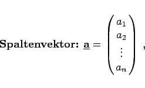
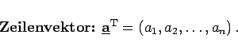
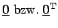

Matrizen vom Typ (n,1) heißen einspaltige Matrizen oder Spaltenvektoren der Dimension n; Matrizen vom Typ (1,n) heißen einzeilige Matrizen oder Zeilenvektoren der Dimension n:
|  | (4.19a) |
|  | (4.19b) |
Mit Hilfe der Transponierung kann ein Spaltenvektor in einen Zeilenvektor umgewandelt werden und umgekehrt. Durch einen Zeilen- bzw. Spaltenvektor der Dimension n kann ein Punkt im n-dimensionalen euklidischen Raum  beschrieben werden.
beschrieben werden.
Der Nullvektor wird durch  gekennzeichnet.